Ondo
A surf and coffee shop brand built from scratch: a checkerboard, sea green and orange identity carrying a love of the ocean across stationery, packaging, and street ads.
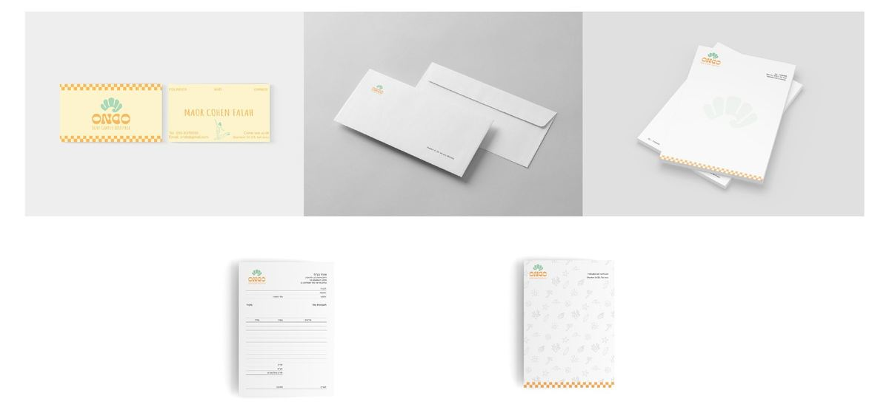
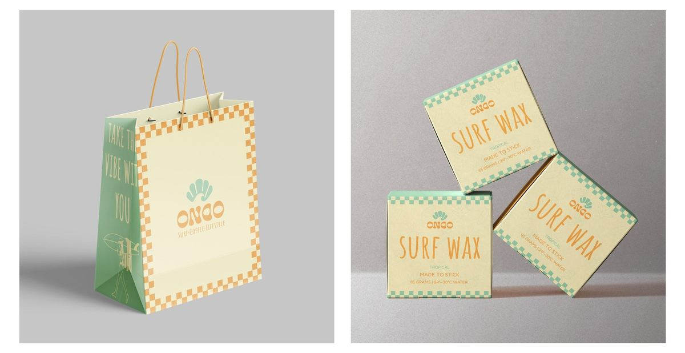
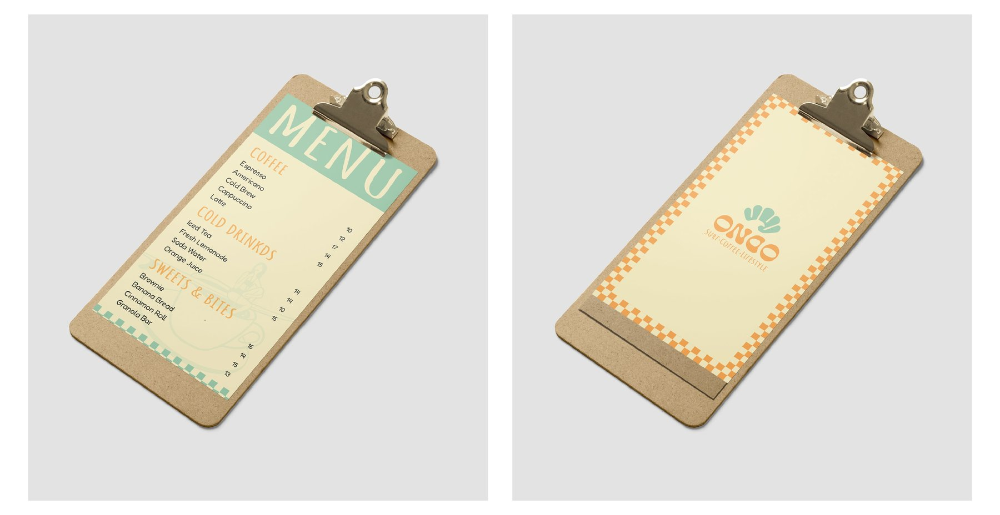
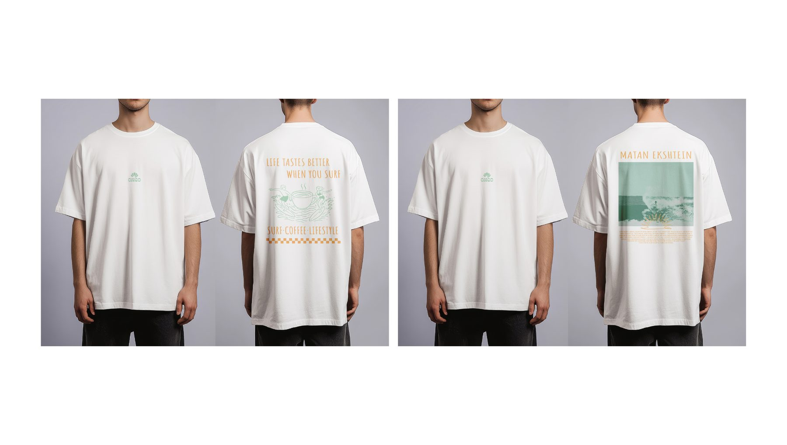
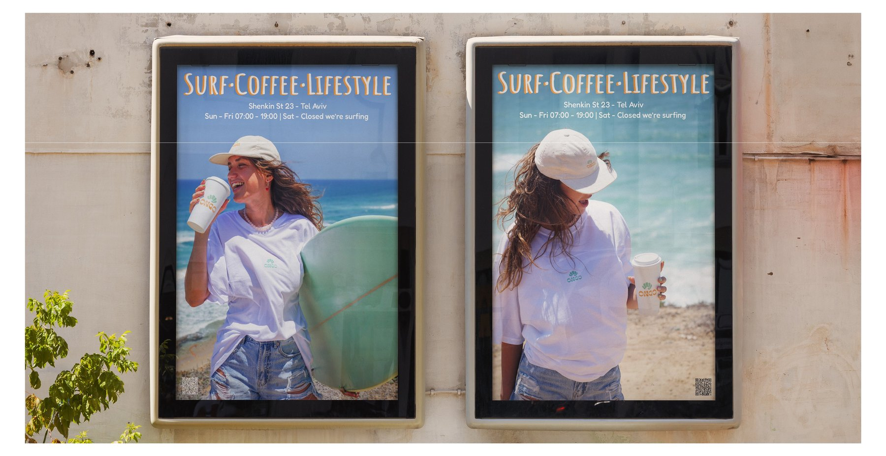
Malkam
A restaurant brand built from scratch for my Illustrator diploma project: a chess themed identity named "Malkam" — a play on מלך (king) and מקום (place) — carried across logo, menu, stationery, signage, and merch.
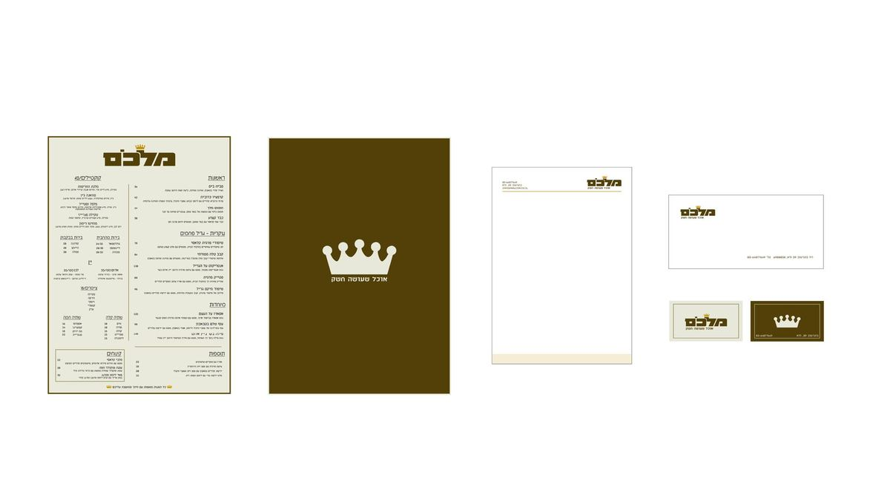
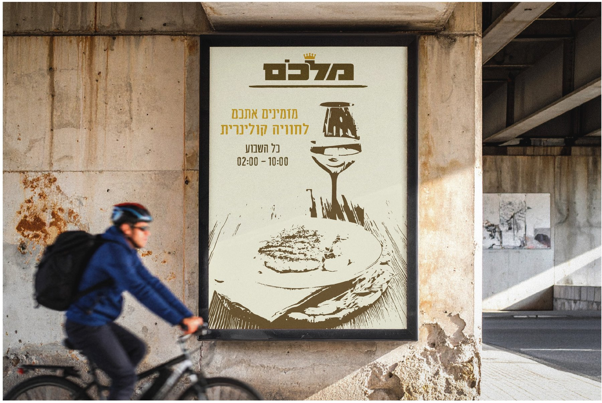
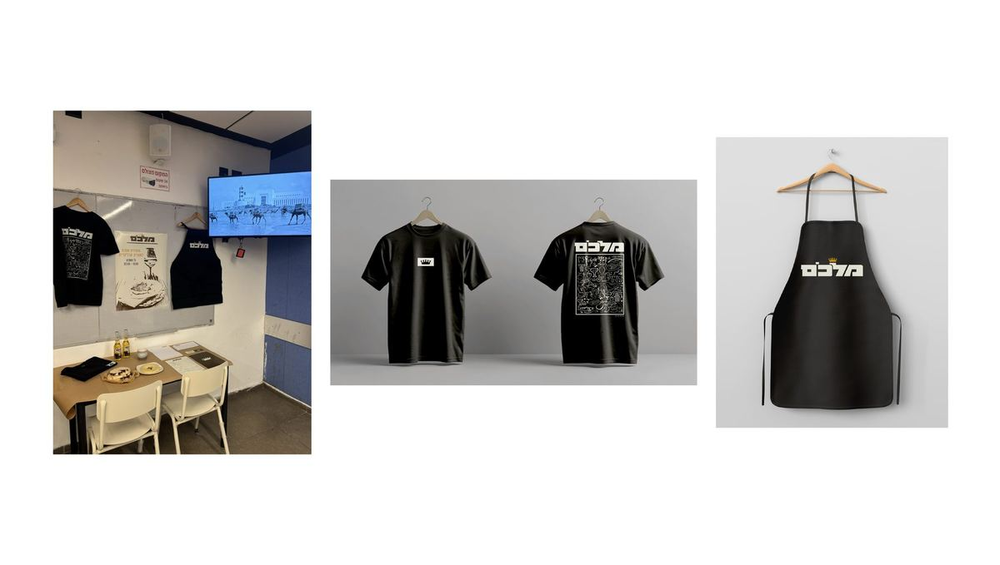
Synthesizer Museum
A visual identity for a museum dedicated to synthesizers, blending 80s-inspired color, type, and graphic texture to connect technology and music.
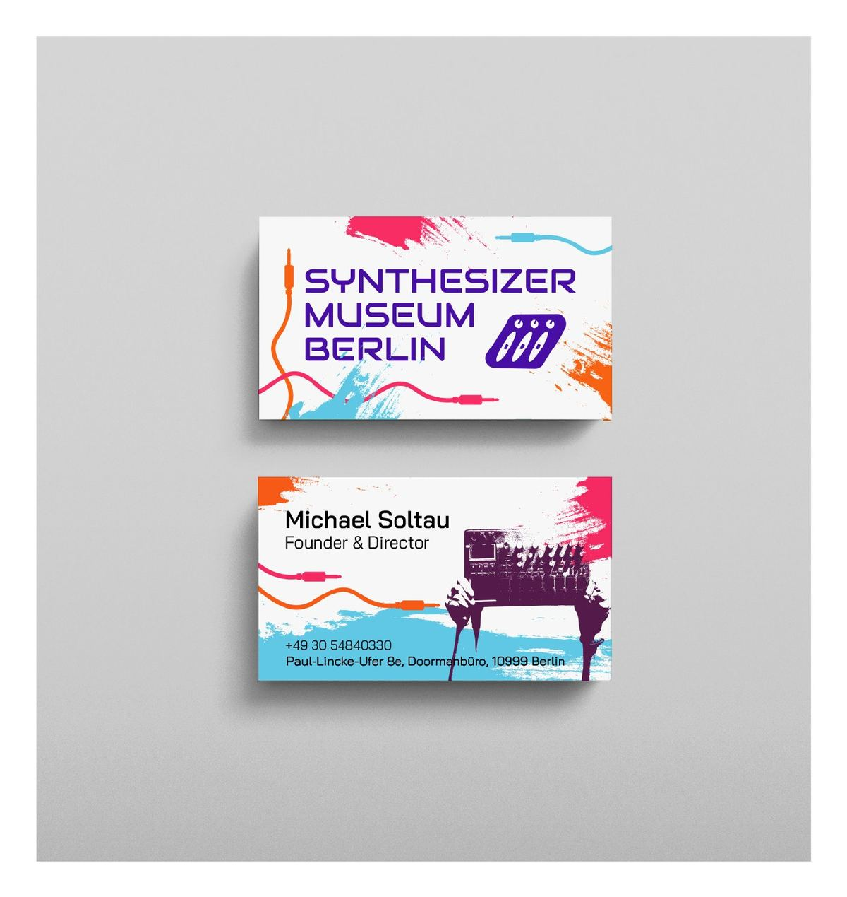
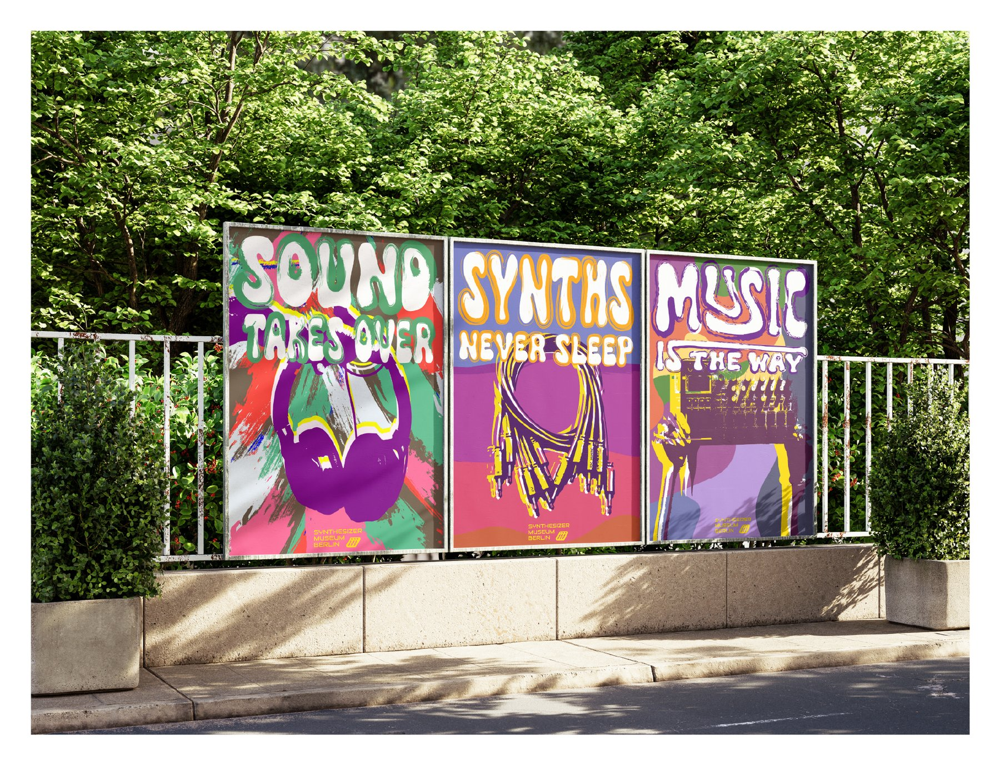
New Balance Posters
A set of storefront ad posters for the New Balance 306, playing the same layout across three color moods.
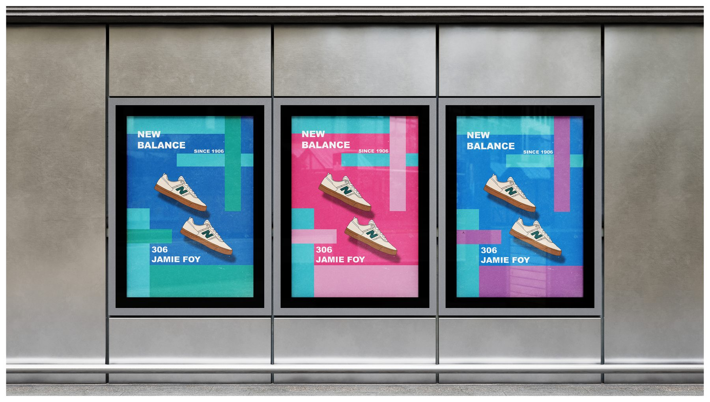
Space Travel Posters
Retro ad posters for a fictional Israeli space travel agency, in Hebrew, built around a shared vintage poster system.
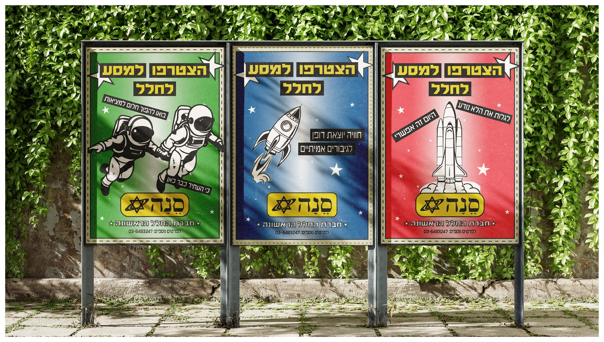
Surf State
A graphic for a tee, built around one of my own surf shots, styled like a vintage magazine clipping.
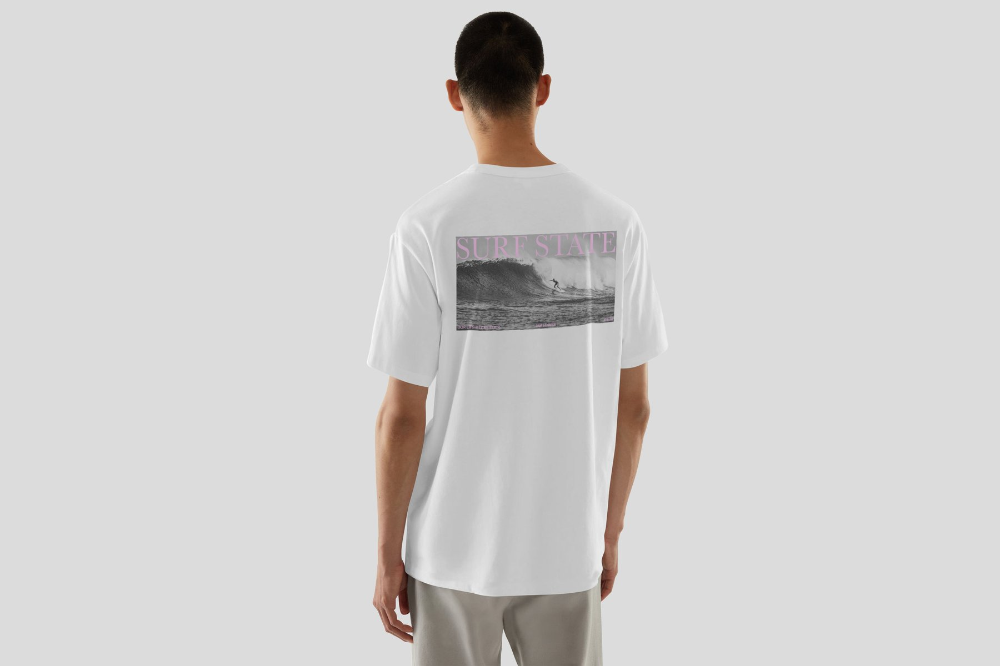
Wine Label
A personalized wine label designed as a birthday gift, illustrated portrait and all.
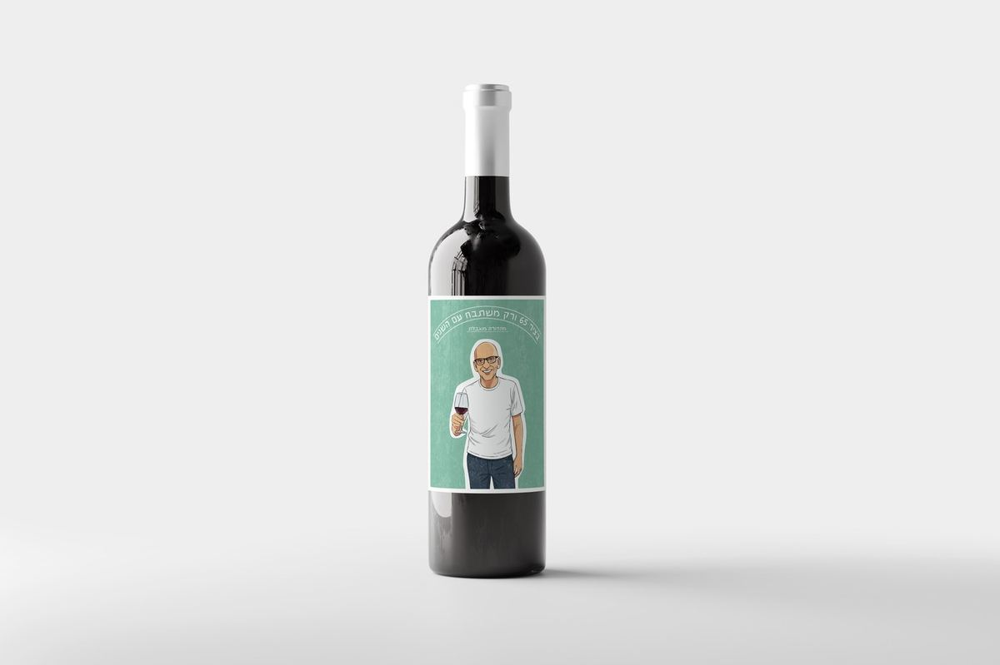
Fashion Festival
A magazine spread laid out just for practice, styled like a fashion editorial.
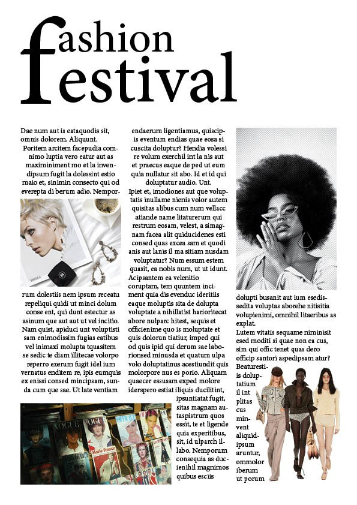
Salt Water Solutions
A magazine spread laid out just for practice.

Through the Lens
A personal surf travel magazine: a collection of trips across Mexico, Costa Rica, and Nicaragua, laid out page by page.


Tel Aviv, Then & Now
A magazine exploring Tel Aviv through its landmarks, pairing archival photos with the same spots today.


Photography
Shots I've taken and edited myself, chasing light, mood, and moments worth slowing down for.


Hand Particle Interaction
A webcam experiment: raise your hand and it pushes a field of floating letters out of the way, tracked live in the browser.
Animations
Motion pieces made just for the fun of moving things around.